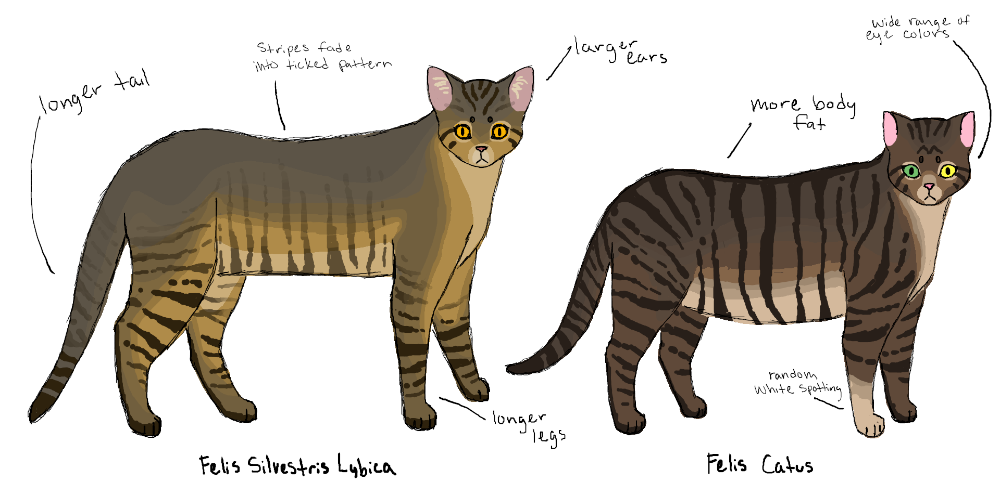
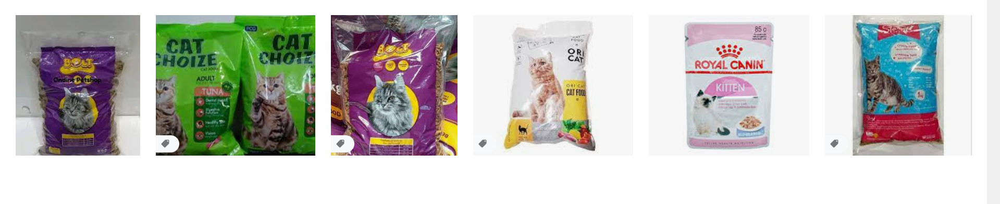

Sejarah

Kucing telah berbaur dengan kehidupan manusia paling tidak sejak
6.000 tahun SM, dari kerangka kucing di Pulau Siprus. Orang Mesir
Kuno dari 3.500 SM telah menggunakan kucing untuk menjauhkan tikus
atau hewan pengerat lain dari lumbung yang menyimpan hasil panen.
Saat ini, kucing adalah salah satu hewan peliharaan terpopuler di
dunia. Kucing yang garis keturunannya tercatat secara resmi sebagai
kucing trah atau galur murni (pure breed), seperti persia, siam,
manx, dan sphinx. Kucing seperti ini biasanya dibiakkan di tempat
pemeliharaan hewan resmi. Jumlah kucing ras hanyalah 1% dari seluruh
kucing di dunia, sisanya adalah kucing dengan keturunan campuran
seperti kucing liar atau kucing kampung
Fakta
-
Mereka tidak bisa merasakan manis
Reseptor rasa utama di lidah kucing telah berubah seiring waktu
karena mutasi
-
Memiliki bentuk hidung yang berbeda dan unik
Cara untuk melihat perbedaannya maka anda melihat hidung kucing
menggunakan kaca pembesar
-
Menghabiskan tigaperempat masa hidupnya untuk tidur
Tubuh mereka melepaskan hormon pertumbuhan hanya ketika mereka
tidur
-
Kucing betina pakai kaki kanan dan jantan kaki kiri
Kucing memiliki preferensi cakar, kucing betina menggunakan kaki
kanan, dan jantan kebanyakan menggunakan kaki kirinya
-
Bukan rasanya tapi baunya yang membuat kucing memakan makanan
Kucing sangat mengandalkan indra penciumannya, terutama saat
akan mengonsumsi makanan
-
Mereka dapat membuat sekitar 100 suara
Tahukah anda dengan teliti bahwa mungkin kucing telah
mengembangkan nada suaranya
Yang Kucing-mu Suka
Berikut toko kami menyediakan pakan kucing dari berbagai merek:

| Merek |
Berat |
Harga |
| Cat Choize |
800 Gram |
Rp.25000,- |
| Whiskas |
480 Gram |
Rp.36000,- |
| Royal Canin Urinary Care |
400 Gram |
Rp.80000,- |
| Ori Cat |
1 Kilogram |
Rp.25000,- |